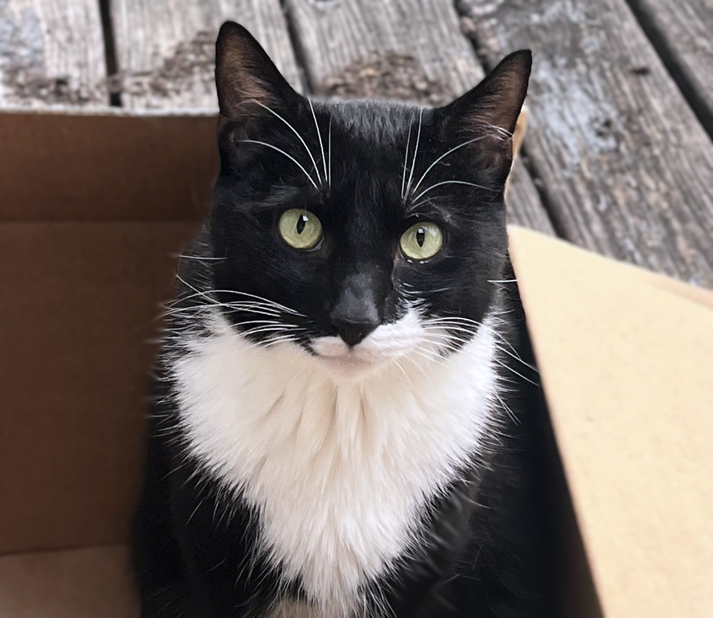

Intro
Hello and Welcome!
I'm Sierra—a dedicated Cloud Computing & Information Technology student with a strong foundation in cloud infrastructure architecture, network administration, and system orchestration. I believe that having a multi-faceted background gives me a unique edge, allowing me to apply principles and problem-solving strategies from other industries to drive success in what I'm doing right now. Whether I'm designing multi-VPC cloud environments or automating workflows, I love building technology that runs reliably and efficiently. Take a look around my portfolio to explore my background, technical projects, and certifications!
Current Focus & Goals
Personal & Professional Growth Goals (Beyond Coursework)
- Expanding Technical Certifications: Advancing my cloud and security credentials by earning the CompTIA Linux+ certification, CompTIA Security+, and pursuing professional-level certifications across AWS, Microsoft Azure, and Google Cloud Platform.
- Broadening Programming Capabilities: Expanding my software development toolkit by learning Rust to build high-performance, memory-safe applications.
- Language & Personal Enrichment: Dedicating time outside of tech to learn a second spoken language, keeping continuous learning a daily habit.
- Long-Term Career Growth: Securing a collaborative role with an innovative company where I can contribute to robust cloud infrastructure and grow long-term alongside a talented team.
About Me

At my core, I deeply value the pursuit of knowledge and a genuine curiosity about the world around me. Whether exploring new destinations through travel or enriching my cultural perspective through international film, global music, and literature, I love discovering diverse viewpoints. When I'm not studying or working, I spend most of my time at home in Lexington with my husband and our tuxedo cat, Albert. I also enjoy diving into a good book, exploring modding projects for games like Stardew Valley, and experimenting with new flavor profiles in the kitchen. Looking ahead to the future, I'm aiming to become an adjunct professor, as well as provide a welcoming, supportive home for children in need.
References & Testimonials
What would your colleagues and instructors say about you?
Transcript:
- “This is a placeholder for the soundbyte I haven't received yet.”
- “Quote from reference 1”
- “Quote from reference 2”
- “Quote from reference 3”